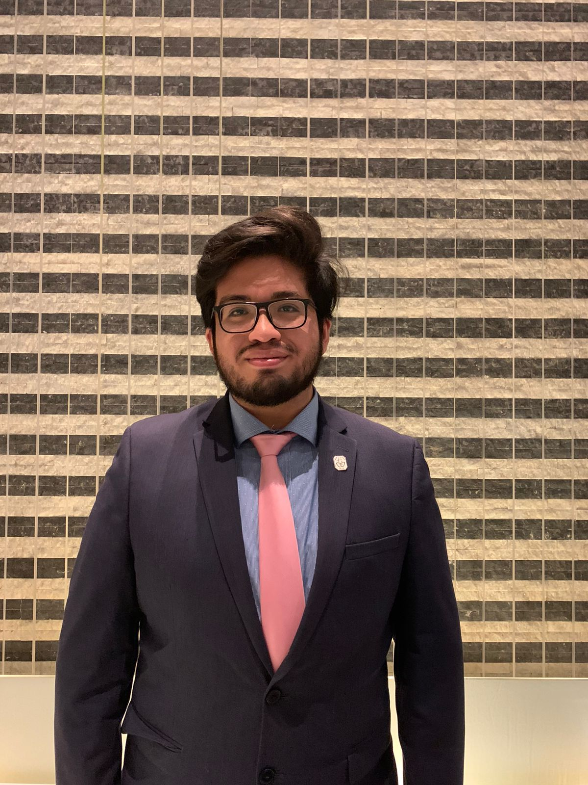
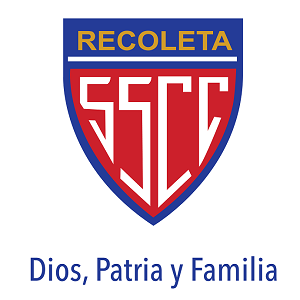
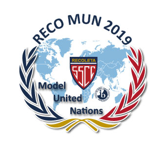

Sebastián Chávarry

An outstanding Software Engineering student from University of Lima
Education
Experience
SS.CC. Recoleta

IB Diploma: 37/45. Higher Level courses: History of Americas (6), Spanish A (6), English B (6)
Second-highest score of the 2019 IB class.
Ranked 9th in the graduating high school class of 2018 composed of 155 students.
University of Adolfo Ibáñez
 Study abroad coursework in Data Mining. GPA [6.4/7]
Topics covered: Unsupervised and Supervised Machine Learning Algorithms
Winner of the “Imagine UAI Global Classroom 2021- 02: Lazos Solidarios” scholarship offered to talented students from South
America to pursue an online exchange programme at Universidad Adolfo Ibañéz
Study abroad coursework in Data Mining. GPA [6.4/7]
Topics covered: Unsupervised and Supervised Machine Learning Algorithms
Winner of the “Imagine UAI Global Classroom 2021- 02: Lazos Solidarios” scholarship offered to talented students from South
America to pursue an online exchange programme at Universidad Adolfo Ibañéz
University of Lima
 Bachelor of Systems Engineering (7
th semester), Major: Software Development. GPA[17.7/20]
Part of the top 10% of the Engineering and Architecture Faculty.
Relevant Coursework: Algorithms & Data Structures, OOP, Data Engineering, Programming Paradigms, HCI.
Class Delegate in 17+ courses ensuring the correct student representation of my peers in front of the faculty authorities.
2-Time Finalist in the Pitch Competition 2020-02 and 2021-01 organized by SAP Next-Gen Lab.
Bachelor of Systems Engineering (7
th semester), Major: Software Development. GPA[17.7/20]
Part of the top 10% of the Engineering and Architecture Faculty.
Relevant Coursework: Algorithms & Data Structures, OOP, Data Engineering, Programming Paradigms, HCI.
Class Delegate in 17+ courses ensuring the correct student representation of my peers in front of the faculty authorities.
2-Time Finalist in the Pitch Competition 2020-02 and 2021-01 organized by SAP Next-Gen Lab.
Recoleta Debate Team

Management position for the organization of the first edition of the Recoleta Model United Nations 2019 conference, which was
attended by more than 500 participants from all over Lima.
Managed to get the logistical and financial support of 10 sponsors, among which were the PUCP, USIL, ULIMA, Alianza
Francesa, EF, etc. skills, knowledge, abilities, or achievements.
Led a team of 30 people and 8 committee directors during the 3 days of the conference.
Santander Consumer Peru
 Managed a team of 5 people organising meetings with the IT manager of this company to gather information about their
processes and their structure for the course “Business Process Management” taught by Professor Pavel Aliaga.
Designed the complaints management process using an AS-IS model using Bizagi Modeler.
Used a quantitative simulation to identify the bottleneck that generated an overuse of 82.21% of the resources.
Redesigned the process by making a TO-BE model based on the redesign heuristics obtaining a 62% reduction in overall cost
and a 24% reduction in duration.
Managed a team of 5 people organising meetings with the IT manager of this company to gather information about their
processes and their structure for the course “Business Process Management” taught by Professor Pavel Aliaga.
Designed the complaints management process using an AS-IS model using Bizagi Modeler.
Used a quantitative simulation to identify the bottleneck that generated an overuse of 82.21% of the resources.
Redesigned the process by making a TO-BE model based on the redesign heuristics obtaining a 62% reduction in overall cost
and a 24% reduction in duration.
Junior Achievement Peru
Lead a team of 5 people to develop a database management system using the Python Flask library and PL/SQL to manage
Junior Achievement competencies through a web app connected to an Oracle Database implementing CRUD operations and
visualization of data through Dashboards. It was made for the course “Data Engineering” taught by Professor July Valencia.
Organised meetings with the project manager identifying functional and non-functional requirements as well as potential users
using an agile approach to organising the team, including the use of tools such as Trello and Notion.
Applied the rules of normalisation to transform their data stored in Excel into a relational database.
Skills
- Technical : Python (Data Analysis and Machine Learning), Java, C++, JavaScript, HTML/CSS, SQL, Bizagi, Excel, PowerPoint, Power
BI, Justinmind, Figma, Illustrator, Photoshop.
- Language : Spanish (native), English (IELTS 7.5/9), French (DELF B2 84/100), German (A2)
LinkedIn